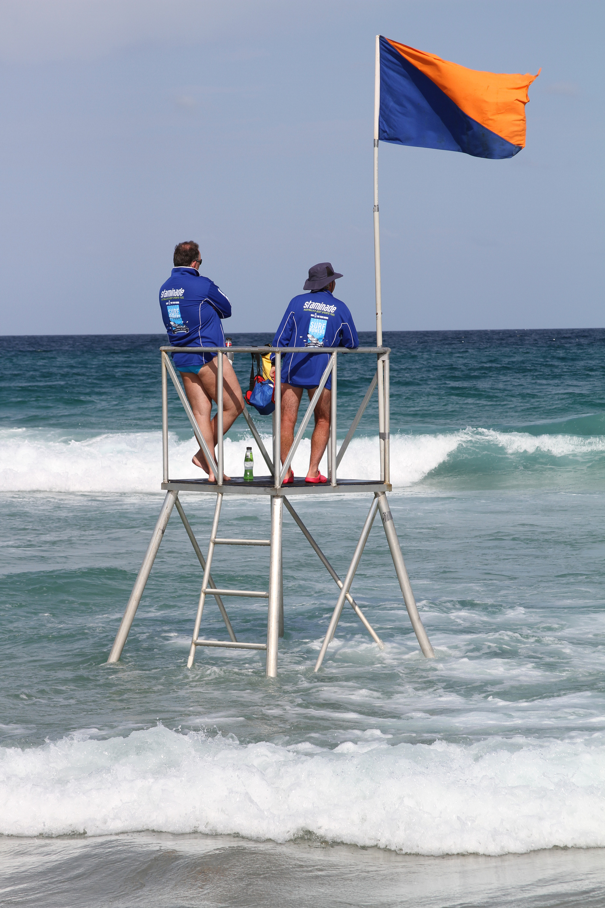

Plugging IT into Life
Dave Lane (@lightweight)
9 October 2014
ITx 2014, Auckland, NZ
This presentation online: http://pres.lane.net.nz/itx2014
The Internet
An unparalleled bounty and a new era: Digital Abundance
Discovery requires only access, time and motivation
"Education can be encouraged from the top down, but can only be improved from the ground up"
- Sir Ken Robinson via Twitter
Learning
Passion x Opportunity x Time
IT Career
Requires passion, attitude, and aptitude.
IT in-and-of-itself is not for everyone...
.. but every other career requires IT skills, too.
IT Everywhere
A continuum:
- a field in its own right
- a set of tools to amplify work in any field
Compose and Broadcast
IT is like a pen attached to a printing press feeding into a global airmail system.
(But faster, cheaper, and more reliable. And interactive)
The 3 "R"s + IT
Today, IT competence is mandatory.
IT is the new literacy.
Teaching Fundamentals
The "flavour of the month" doesn't matter.
Focus on underlying principles:
- Online etiquette
- Good Digital Hygiene
- Awareness of "Digital Shadow"
- Be sceptical of everything
- When in doubt, contribute
Set sensible expectations.
Culture Shift
- IT can be part of every subject.
- For a subset of learners, IT will become the focus.
- For the rest, it'll be secondary, but still crucial.
Let the learner lead the way.
Opportunity
Exercising IT within school, but more importantly, outside: anywhere, any time
(Ubiquitous learning)
Natural Creators
What not to teach: how to be a good little consumer.
Cross-pollination
Disciplines colliding for mutual improvement.

Unexpected Inspiration
An IT analogue to Surf Lifesaving.
Where's the Value?
We're not in it just for the adrenalin!
(although there's plenty of that)
Share and Share Alike
The bounty is growing, for the benefit of teachers and learners.
Rewards are greatest for those who share.
Plus...(Open) Badges!
What Boundaries?
Exploration should be limited only by the learner's interest, not by facilities or teachers' comfort levels.
No glass ceilings in an open source world.
Boundless Opportunity
IT is an open frontier of global proportions. IT defines opportunity.
Trust your Tour Guides
In this brave new world, our guides are the young.
They lead by sharing their ideas because they haven't yet been taught not to - let's learn from them.
Other Puzzle Pieces
The community - both in IT and in education - is providing the pieces of the puzzle.
Now to pull it all together to create a sustainable social institution.
 Creative Commons Licensed
Creative Commons Licensed